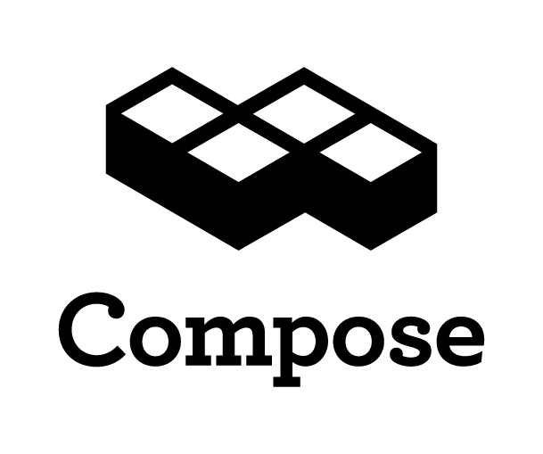

Meetup with RethinkDB, Meteor and Compose
TL;DR: RethinkDB, Compose and Meteor are hosting a meetup at Compose HQ on November 12 at 6pm.
How can we communicate how much we love databases and the people who use them? One answer is, by hosting a meetup with our friends at RethinkDB and Meteor and inviting you along to join us all at Compose HQ in San Mateo, that’s how and that’s what’s happening this Wednesday, November 12, from 6pm to 8:30pm. It’s a packed agenda, with a beginner’s workshop, running alongside our food and beer opening at 6pm, where you can learn how to use RethinkDB and Compose together. Then at 7pm we’ll move on to the talks:
Compose: Setting the tone for the discussions, Kurt Mackey, co-founder and CEO of Compose, will talk about application evolution, how that process changes the data needs of an application and how it can be addressed more effectively with one or more than one class of database.
Meteor: Slava Kim from Meteor will be demonstrating the Meteor platform’s capabilities, with a focus on its reactive database drivers and how it integrates with MongoDB and Redis. Meteor’s powerful JavaScript-based platform lets you leverage databases and the web to produce near real-time responses for users.
RethinkDB: Slava Akhmechet, one of the RethinkDB founders and its CEO, will be talking about… well, that’s going to be a surprise, but it should be good given RethinkDB is one of the hottest new databases around at the moment with its integrated web-based cluster management, ability to do distributed joins and much more.
We hope you’ll be excited to try out RethinkDB after Slava’s presentation and that’s why we’ll also have coupons for a free month of hosted RethinkDB on Compose so you can get to trying out what you’ve picked up straight away. We’ll then all adjourn for questions and answers, networking and socialising.
We’re looking forward to welcoming you to the Compose HQ so join up and RSVP for the event and we’ll see you there!